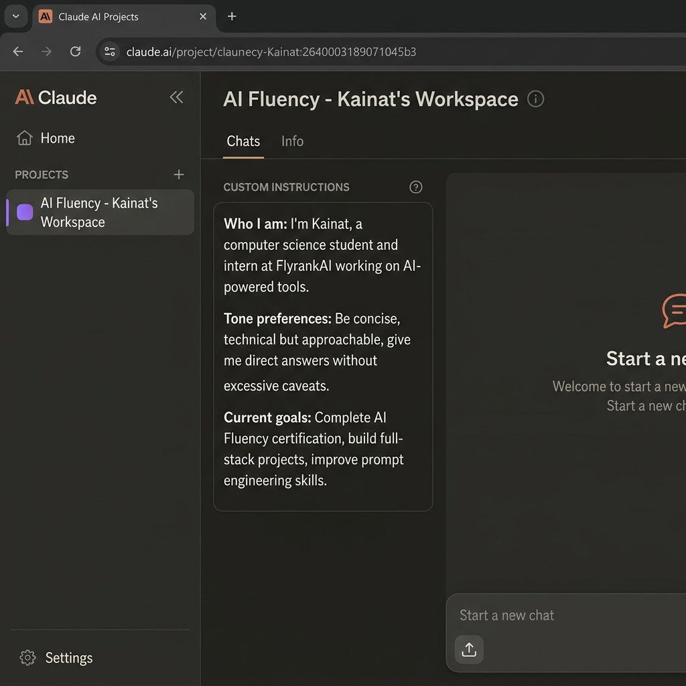

Mapping where AI helps, where it wastes time, and where it should never be trusted — the core fluency skill.
| # | Task | Classification | Rationale |
|---|---|---|---|
| 01 | Debugging backend API errors in Node.js | 🤝 Collaborate | AI spots patterns fast; I must understand root cause and own the fix. |
| 02 | Writing academic reflection essays | 👤 Just Me | My personal voice and lived experience cannot be replicated or delegated. |
| 03 | Generating boilerplate React components | ⚡ Fully Automate | Repetitive, predictable structure — AI output is identical to what I'd write. |
| 04 | Responding to internship supervisor feedback | 👤 Just Me | Requires genuine professional judgment and an authentic relationship. |
| 05 | Researching new technical concepts (e.g., vector DBs) | 🤝 Collaborate | AI provides efficient starting point; I validate sources and build my own model. |
| 06 | Writing commit messages & PR descriptions | 🔍 Delegate + Review | AI drafts solid messages; I review for accuracy and alignment with the actual diff. |
| 07 | Brainstorming project feature ideas | 🤝 Collaborate | AI expands my thinking; I evaluate feasibility, user needs, and priority myself. |
| 08 | Setting up Docker / .env configs | 🔍 Delegate + Review | AI generates a reasonable config; I review for security and project-specific needs. |
| 09 | Planning my weekly study schedule | 👤 Just Me | Only I know my energy levels, real deadlines, and personal priorities each week. |
| 10 | Writing CSS styling for UI components | 🔍 Delegate + Review | AI produces functional CSS quickly; I review for design consistency and responsiveness. |
| 11 | Summarizing long technical documentation | ⚡ Fully Automate | AI summary is reliable for dense docs; saves hours with no meaningful quality loss. |
| 12 | Preparing for technical interviews | 🤝 Collaborate | AI generates practice problems and explains concepts, but understanding must be mine. |
| 13 | Creating data pipeline scripts (FlyrankAI tasks) | 🤝 Collaborate | Complex enough to require my logic decisions; AI accelerates syntax and library use. |
| 14 | Writing cold emails / professional outreach | 🔍 Delegate + Review | AI drafts; I personalize tone and verify the ask is appropriate for the recipient. |
| 15 | Daily journaling / personal reflection | 👤 Just Me | Deeply personal — AI involvement would defeat the entire purpose of the exercise. |
Who I am: I'm Kainat Bibi, a computer science student and intern at FlyrankAI, working on AI-powered tools, full-stack web apps, and data pipelines. I'm currently completing the Anthropic AI Fluency certification.
Tone preferences: Be concise and technical, but approachable. Give direct answers — skip unnecessary caveats and filler. Use code examples when relevant. Flag when I'm approaching something the wrong way.
Current goals: Complete AI Fluency: Framework & Foundations (Anthropic Academy). Build production-quality full-stack projects for my portfolio. Improve prompt engineering and AI workflow design skills. Ship a capstone widget platform at FlyrankAI.

Debug backend API errors in Express.js / Node.js services built during my FlyrankAI internship.
Research and synthesize new technical concepts (e.g., RAG pipelines, auth patterns) to inform FlyrankAI project decisions.
Draft pull request descriptions, README updates, and inline code documentation for internship submissions.